| passenger_id | home_planet | cryo_sleep | cabin | destination | age | vip | room_service | food_court | shopping_mall | spa | vr_deck | name | transported |
|---|---|---|---|---|---|---|---|---|---|---|---|---|---|
| 0001_01 | Europa | False | B/0/P | TRAPPIST-1e | 39.0 | False | 0.0 | 0.0 | 0.0 | 0.0 | 0.0 | Maham Ofracculy | False |
| 0002_01 | Earth | False | F/0/S | TRAPPIST-1e | 24.0 | False | 109.0 | 9.0 | 25.0 | 549.0 | 44.0 | Juanna Vines | True |
| 0003_01 | Europa | False | A/0/S | TRAPPIST-1e | 58.0 | True | 43.0 | 3576.0 | 0.0 | 6715.0 | 49.0 | Altark Susent | False |
| 0003_02 | Europa | False | A/0/S | TRAPPIST-1e | 33.0 | False | 0.0 | 1283.0 | 371.0 | 3329.0 | 193.0 | Solam Susent | False |
| 0004_01 | Earth | False | F/1/S | TRAPPIST-1e | 16.0 | False | 303.0 | 70.0 | 151.0 | 565.0 | 2.0 | Willy Santantines | True |
Spaceship Titanic Machine Learning
Background
I. Initial Wrangling
Here is a sample of the training dataset.
Table 1: Five records of the training dataset capturing all variables in the raw data file
This preview indicates that multiple string fields can be split into separate variables (Table 1). Specifically, passenger_id is composed of a 4-digit passenger_group and a 2-digit ticket split by an underscore. cabin comprises deck, num (room number), and side (either P for port or S for starboard) separated by “/”s. Understandably, name has two components: a first name (f_name) and a last name (l_name).
These new variables were created by splitting up passenger_id, cabin, and name (Table 2).
Table 2: Sample of training data showing the three string variables and their respective components
| passenger_id | passenger_group | ticket | cabin | deck | num | side | name | f_name | l_name |
|---|---|---|---|---|---|---|---|---|---|
| 0001_01 | 0001 | 01 | B/0/P | B | 0 | P | Maham Ofracculy | Maham | Ofracculy |
| 0002_01 | 0002 | 01 | F/0/S | F | 0 | S | Juanna Vines | Juanna | Vines |
| 0003_01 | 0003 | 01 | A/0/S | A | 0 | S | Altark Susent | Altark | Susent |
| 0003_02 | 0003 | 02 | A/0/S | A | 0 | S | Solam Susent | Solam | Susent |
| 0004_01 | 0004 | 01 | F/1/S | F | 1 | S | Willy Santantines | Willy | Santantines |
II. Exploratory Data Analysis
The wrangled data were explored visually using univariate and bivariate plots.
A. Univariate
Histograms of the six numerical predictors–age, room_service, food_court, shopping_mall, spa, and vr_deck–were constructed.

Figure 1: Frequency distributions of the six numerical predictors in the training data
age has a right-skewed distribution. The histograms of the remaining predictors indicate high frequencies of 0s (Fig. 1).
Categorical variables were visualized using barplots.
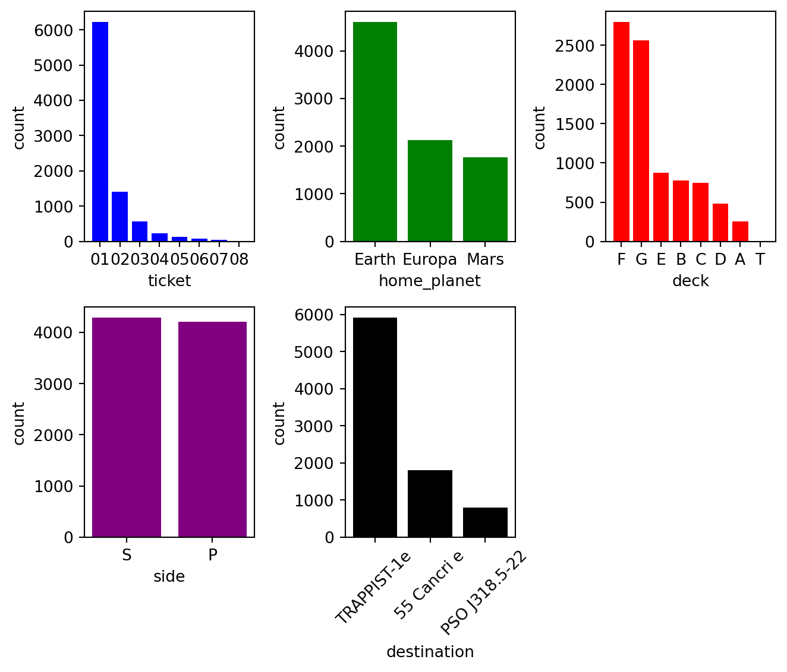
Figure 2: Frequency distributions of the five categorical predictors in the training data
ticket frequencies decreased as their numbers increased. home_planet counts were similar for Europa and Mars but much greater for Earth. Categories F and G in deck were more common than the rest, while T was clearly the rarest level. side was similarly distributed between S and P. Finally, TRAPPIST-1e was the most common destination, followed by 55 Cancri e and finally PSO J318.5-22 (Fig. 2).
Like categorical variables, Boolean features were also explored with barplots.
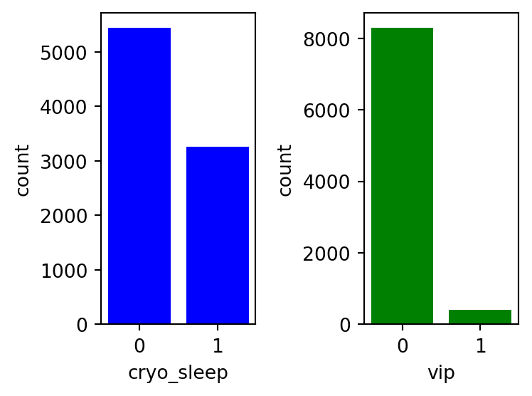
Figure 3: Frequency distributions of the two Boolean predictors in the training data
The 0 bar is associated with False, while the 1 bar is associated with True values. cryo_sleep (whether passenger was in cryogenic sleep during duration of voyage) had 2000 more False than True values, while vip (whether passengers paid for VIP services) had even greater disparity with under 500 False values (Fig. 3).
B. Bivariate
Bivariate plots of each predictor with the target variable, transported, were constructed to understand this relationship, which may provide insight into variable importance when investigating model diagnostics.
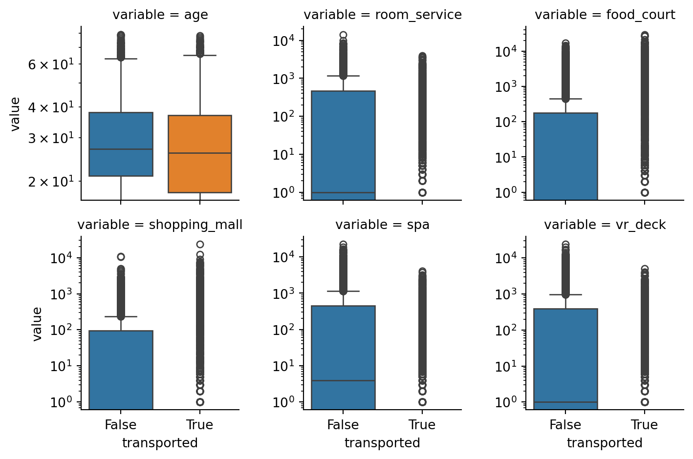
Figure 4: Boxplots of numerical features by transported status
From these results, age is distributed similarly between transported values. However, the remaining five numerical predictors (i.e., room_service, food_court, shopping_mall, spa, and vr_deck) were consistently greater when passengers were not transported relative to when they were (Fig. 4).
Grouped bar plots were constructed to understand frequency differences among factor levels and between transported values.
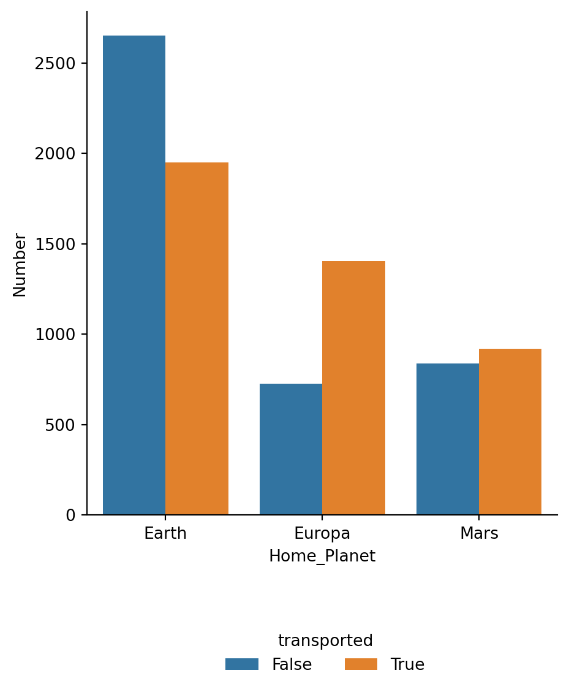
Figure 5: Numbers of passengers by destination and transported
Figure 5 shows that there were slightly more passengers transported whose home_planet was Mars. In contrast, this discrepancy grew for home_planet Europa and occurred in the opposite pattern for home_planet Earth.
Boolean predictors were graphed in the same manner as categorical variables.
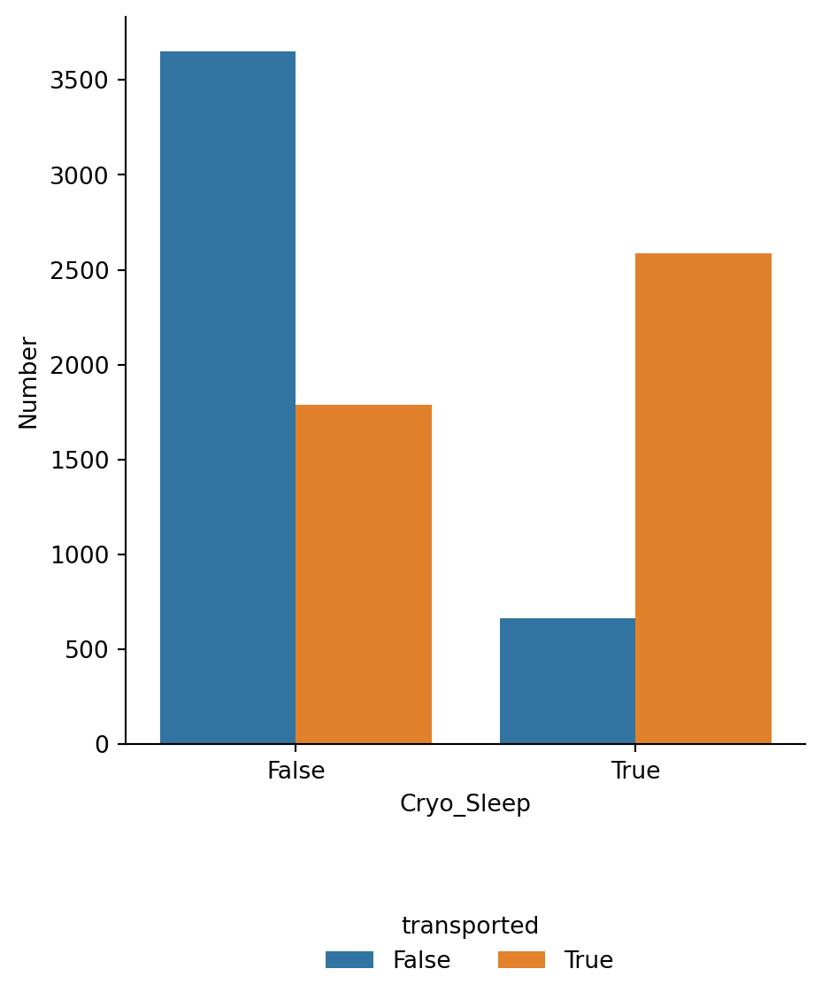
Figure 6: Numbers of passengers by cryo_sleep and transported
Substantially more passengers without cryo_sleep were not transported than were, and the opposite was true of passengers with cryo_sleep (Fig. 6).
III. Discretize num variable
The predictor num comes from the original variable cabin, and it indicates the room number of the cabin. Typically (but not always) the leading digit of a room number represents the floor number, so room 204 would occur on the second floor (or perhaps the 3rd floor, if there is numbering with a leading 0, such as room 025). Regardless, it’s another way to differentiate rooms, and thus passengers, in a categorical manner. In contrast, there are numerous rooms (values of num) and they don’t have any numerical meaning, so some type of feature extraction is warranted.
The relationships between the target variable and floors (floor) and groups of two (floor_2), three (floor_3), and four (floor_4) floors were visualized.
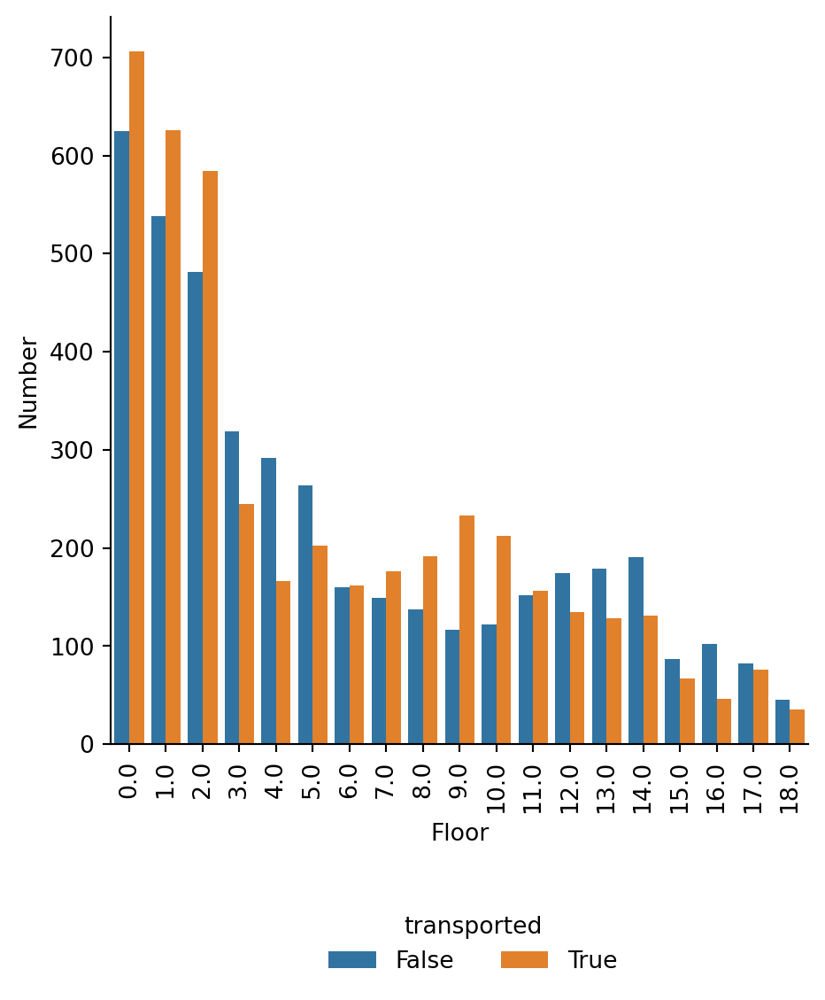
Figure 7a: Numbers of passengers by floor and transported
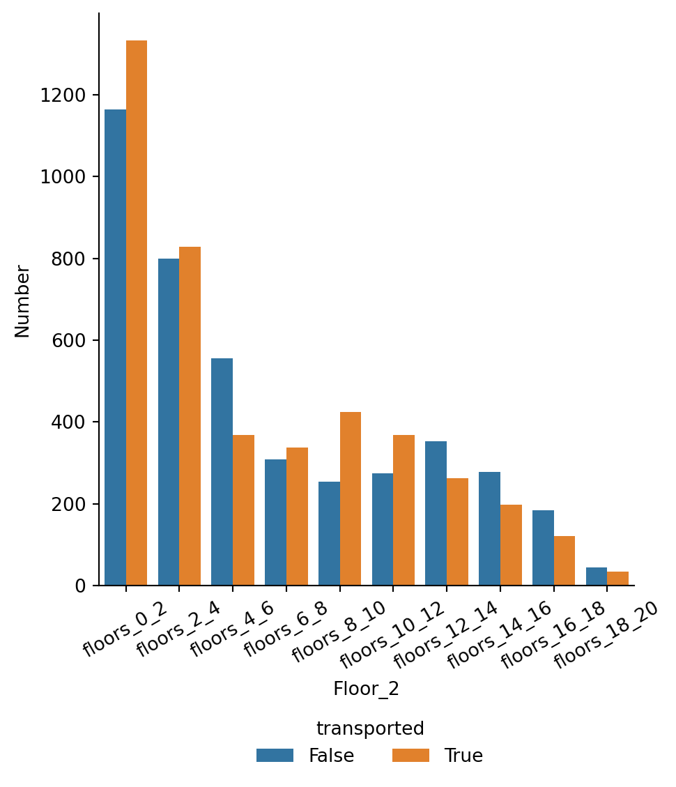
Figure 7b: Numbers of passengers by groups of two floors and transported
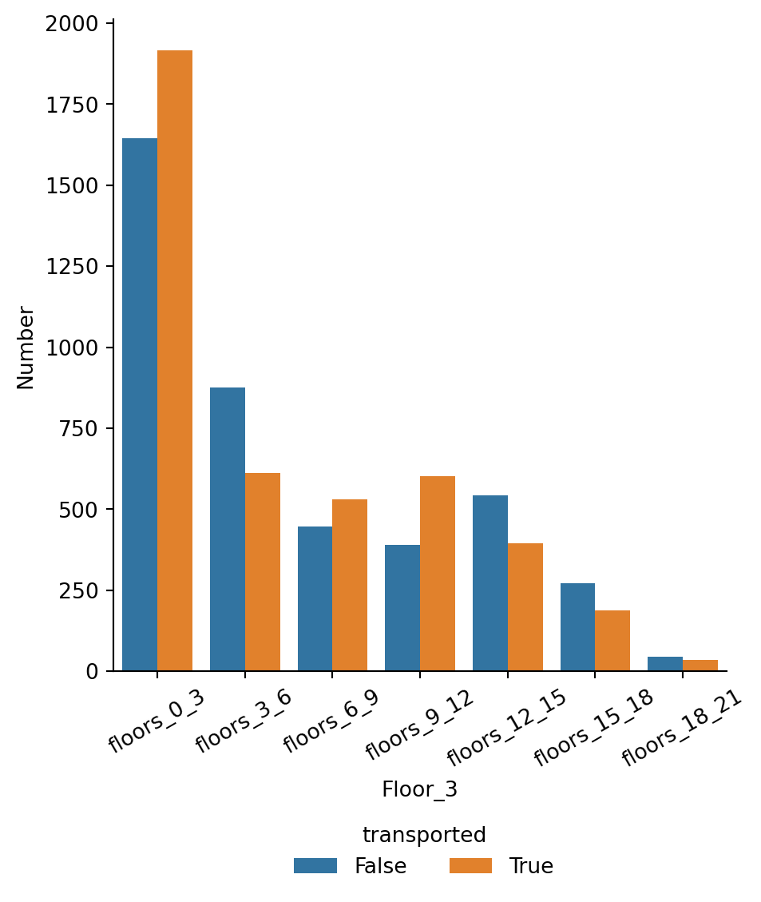
Figure 7c: Numbers of passengers by groups of three floors and transported
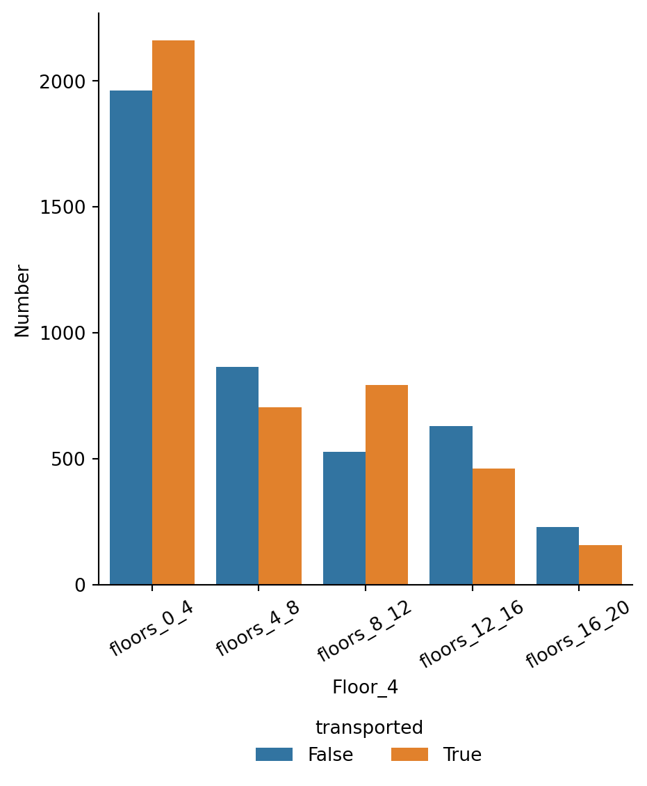
Figure 7d: Numbers of passengers by groups of four floors and transported
Although there are differences in counts of transported status by floor and groups of two floors, larger bins of floors also show these deviations and are easier to work with as they yield fewer categories (Figs. 7a-d). Thus, floor_4 was selected as a feature.
IV. Create New ‘Size’ Variables
The size of the travelling group may be related to transported, so two new features were created from the data: group_size and cabin_size. The former measures the number of passengers associated with a passenger_group, while the latter is defined by the total occupants in the same cabin.
V. Data Imputation
A. Assess missingness
After creating/extracting new features from the original training data set (e.g., passenger_group, ticket, deck, side, floor_4, group_size, cabin_size), missingness across all variables was assessed.
Table 3: Numbers of missing values by variable for variables with at least one missing value
| variable | n_missing |
|---|---|
| shopping_mall | 208 |
| home_planet | 201 |
| name | 200 |
| l_name | 200 |
| f_name | 200 |
| floor_4 | 199 |
| side | 199 |
| num | 199 |
| deck | 199 |
| cabin_size | 199 |
| cabin | 199 |
| vr_deck | 188 |
| spa | 183 |
| food_court | 183 |
| destination | 182 |
| room_service | 181 |
| age | 179 |
A number of predictors have roughly 200 missing values (Table 3). The pattern of missingness was assessed using Little’s MCAR test, which was not significant (X2 = 8.46 x 10-30, p = 1), providing evidence that missingness is completely at random.
B. Impute values
Given the MCAR pattern, simple univariate methods were employed to impute values. For numerical and Boolean predictors, median imputation was implemented. The median value of features with high frequencies of zeros would help capture the severely skewed distributions (Fig. 1). Median imputation for Boolean features is analogous to selecting the most common category, whether that’s True or False. That approach was chosen because missing categorical variables were imputed in the same manner: the most frequent category replaced missing values for that particular variable.
VI. Feature Engineering and Selection
A. Check for multicollinearity
Multicollinearity among numerical features was assessed by creating a Pearson correlation matrix.
Table 4: Pearson correlation matrix of numerical features
| variable | age | room_service | food_court | shopping_mall | spa | vr_deck | group_size | cabin_size |
|---|---|---|---|---|---|---|---|---|
| age | 1 | 0.0686 | 0.127 | 0.0331 | 0.121 | 0.0996 | -0.177 | -0.16 |
| room_service | 0.0686 | 1 | -0.0151 | 0.0523 | 0.00924 | -0.0186 | -0.0397 | -0.0646 |
| food_court | 0.127 | -0.0151 | 1 | -0.0137 | 0.221 | 0.225 | 0.0325 | 0.0648 |
| shopping_mall | 0.0331 | 0.0523 | -0.0137 | 1 | 0.0145 | -0.00785 | -0.0385 | -0.051 |
| spa | 0.121 | 0.00924 | 0.221 | 0.0145 | 1 | 0.148 | 0.0192 | 0.0411 |
| vr_deck | 0.0996 | -0.0186 | 0.225 | -0.00785 | 0.148 | 1 | 0.00913 | 0.0367 |
| group_size | -0.177 | -0.0397 | 0.0325 | -0.0385 | 0.0192 | 0.00913 | 1 | 0.878 |
| cabin_size | -0.16 | -0.0646 | 0.0648 | -0.051 | 0.0411 | 0.0367 | 0.878 | 1 |
No pair of numerical predictors was highly correlated (all r < 0.9); thus, none was dropped from the training data due to multicollinearity (Table 4).
B. Feature scaling
Numerical predictors were assessed visually for normality to understand the type of scaling needed.
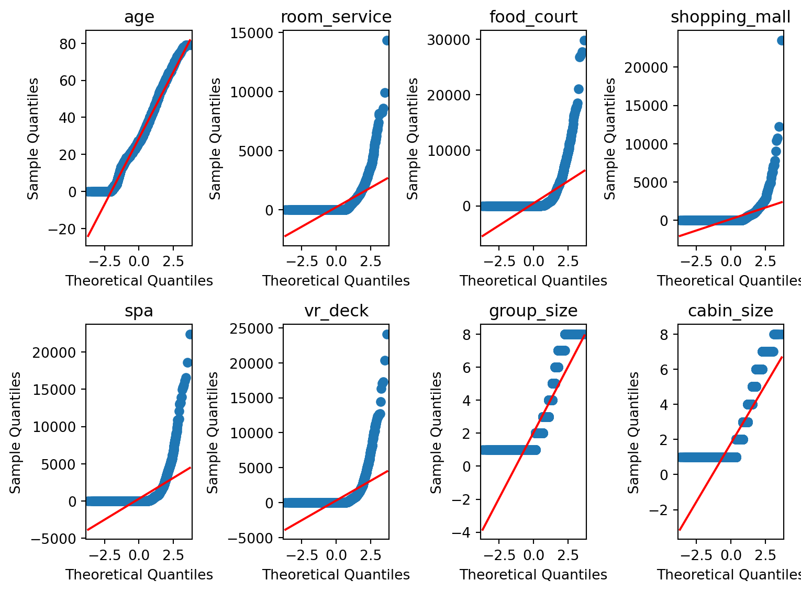
Figure 8: Q-Q plots of the eight numerical predictors
Aside from age, no numerical features exhibited a normal distribution (Fig. 8). Thus, these features underwent normalization (min-max scaling).
C. Rare label encoding
Rare categories can cause problems when fitting models because they can either 1) be absent in a cross-validation fold or 2) occur at low frequencies which could lead to model overfitting. Thus, it’s important to combine rare factor levels or add them to more common categories to prevent absence or low frequencies of categories during cross-validation.
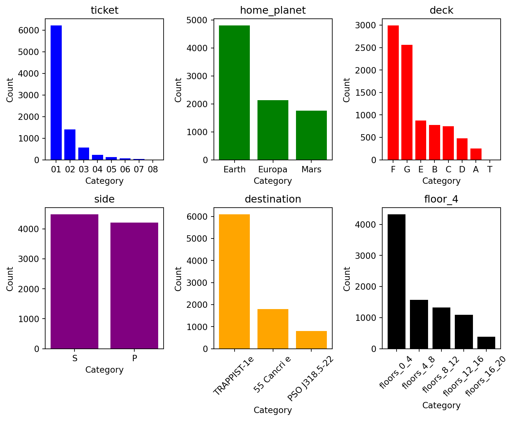
Figure 9: Numbers of each category for all six categorical variables
Using a threshold of 2% (or 174 passengers for the training data), two variables show concern for rarity of factor levels: ticket and categories 5-8 and deck and category T (Fig. 9). To address these rarities, tickets 5-8 were combined into a single category called ‘05_08’ and deck T was added to deck A to form ‘A_T’.
D. One-hot encoding
Although some categorical features have a built-in order to them (e.g., numerical, alphabetical), no obvious inherent ranks are associated with any of these features (e.g., home_planet, deck). Thus, one-hot encoding was used for all categorical variables.
E. Finalization
Extraneous variables (e.g., name, num, cabin) were removed, leaving behind the following explanatory variables (Table 5) and transported, the target variable.
Table 5: Final list of features used in modelling the training data to predict transported
| passenger_id | age | room_service | food_court |
| shopping_mall | spa | vr_deck | group_size |
| cabin_size | ticket_01 | ticket_02 | ticket_03 |
| ticket_04 | ticket_05_08 | home_planet_Earth | home_planet_Europa |
| home_planet_Mars | deck_A_T | deck_B | deck_C |
| deck_D | deck_E | deck_F | deck_G |
| side_P | side_S | destination_55 Cancri e | destination_PSO J318.5-22 |
| destination_TRAPPIST-1e | floor_4_floors_0_4 | floor_4_floors_12_16 | floor_4_floors_16_20 |
| floor_4_floors_4_8 | floor_4_floors_8_12 | cryo_sleep | vip |
VII. Modelling
A. Fit models to training data
Three model types were used in modelling: logistic regression, decision tree, and random forest. These models were fit to the training dataset via cross-validation on five folds. The mean accuracy scores were as follows: 0.794 (random forest), 0.767 (logistic regression), and 0.725 (decision tree). The random forest model was selected and tuned.
B. Hyperparameter tuning and model selection
The following hyperparameter combinations were used in tuning the random forest model:
- min_samples_leaf (minimum number of samples required at a leaf node): 2, 5, 10, 20
- min_samples_split (minimum number of samples required to split an internal node): 2, 5, 10, 20
- n_estimators (number of trees): 50, 100, 500
The best model had min_samples_leaf = 2, min_samples_split = 10, and n_estimators = 500 and a mean accuracy score of 0.801.
C. Diagnostics
Diagnostics were evaluated in two ways. First, a confusion matrix was constructed to visualize the accuracy of true and false predictions against the actual values.
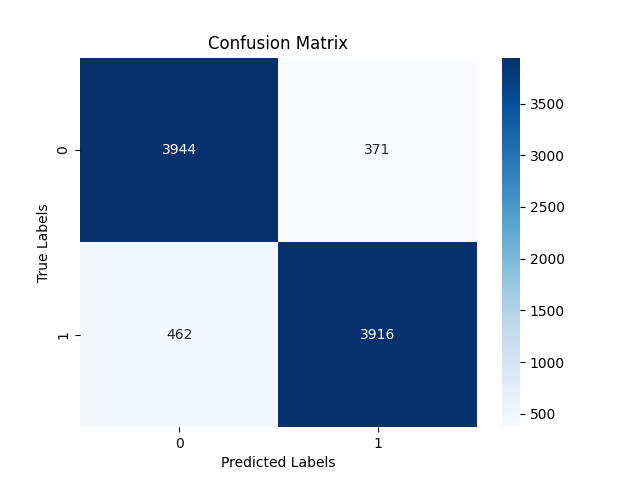
Figure 10: Confusion matrix of the tuned random forest model on the training data
This confusion matrix shows slightly better accuracy when the actual label is false (91.4%) than when it is true (89.4%; Fig. 10).
Second, feature importances were visualized to understand how much each feature contributes to predictions.
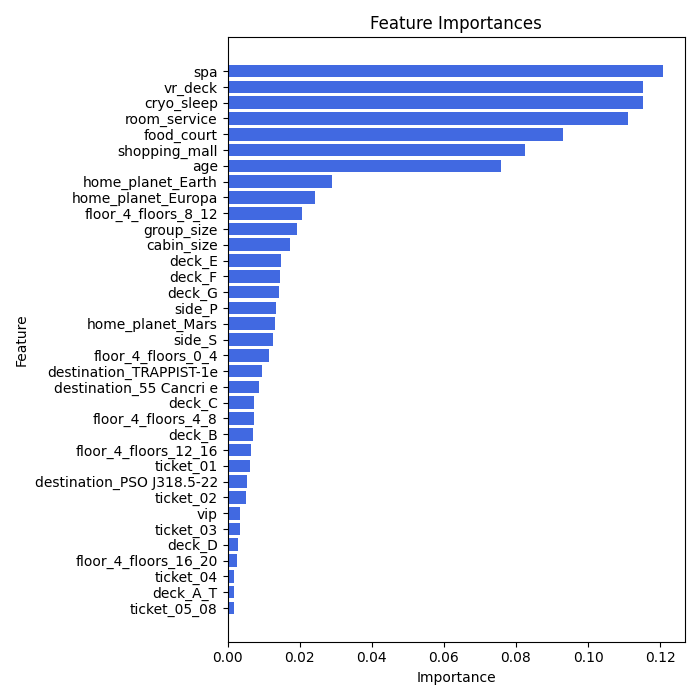
Figure 11: Plots of feature importances for each feature in descending order
The feature importances plot shows a clear distinction between highly important and less important features. spa, vr_deck, cryo_sleep, room_service, food_court, shopping_mall, and age contribute significantly more to the predictions than the remaining features. Interestingly, aside from cryo_sleep, these are all numerical predictors. Furthermore, aside from age, the remaining highly important features quantify the amounts of luxury amenities billed by passengers.
VIII. Test Data Preparation
The test data were prepared using the same methods as the training data:
- string variables passenger_id, cabin, and name were split into their respective components
- floor_4 was extracted from num (which was derived from cabin)
- predictors group_size and cabin_size were created from passenger_group and cabin, respectively
- missing numerical and Boolean values were imputed with median values
- missing categorical variables were imputed with the most frequent category
- numerical features were normalized (min-max scaling applied)
- one-hot encoding was applied to categorical features
- the same final set of features used in the training data were selected for the test data
IX. Model Evaluation
The tuned random forest model (min_samples_leaf = 2, min_samples_split = 10, and n_estimators = 500) was evaluated on the test data by predicting transported status of 4,277 passengers. These predicted values were submitted to Kaggle for scoring, resulting in an accuracy of 0.79915 or 79.9%.
In comparison, this same model had an accuracy of 80.1% on the training data. The best model on the Kaggle leaderboard at time of submission was 82.8% accurate. Thus, this indicates that the tuned random forest model exhibited low-moderate bias and variance and does not demonstrate under- or over-fitting.